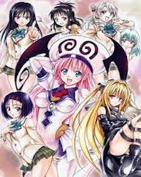

出包王女 第一季
电视动画《出包王女》改编自长谷见沙贵负责脚本、矢吹健太朗作画的同名漫画。
超级纯情（？？？）的高中生结城梨斗，怀着极大的决心试图要向爱慕的春菜告白，可是，因为一场误会，他告白的对象变成突然从天而降的外星人美少女菈菈！？热情奔放、天真烂漫的菈菈闯入梨斗的平凡世界，貌似天使行为却像恶魔的她，使得梨斗陷入了难以想像的混乱生活中，一段热闹搞笑、令人脸红心跳的爱情喜剧就此展开。
电视动画《出包王女》改编自长谷见沙贵负责脚本、矢吹健太朗作画的同名漫画。
超级纯情（？？？）的高中生结城梨斗，怀着极大的决心试图要向爱慕的春菜告白，可是，因为一场误会，他告白的对象变成突然从天而降的外星人美少女菈菈！？热情奔放、天真烂漫的菈菈闯入梨斗的平凡世界，貌似天使行为却像恶魔的她，使得梨斗陷入了难以想像的混乱生活中，一段热闹搞笑、令人脸红心跳的爱情喜剧就此展开。